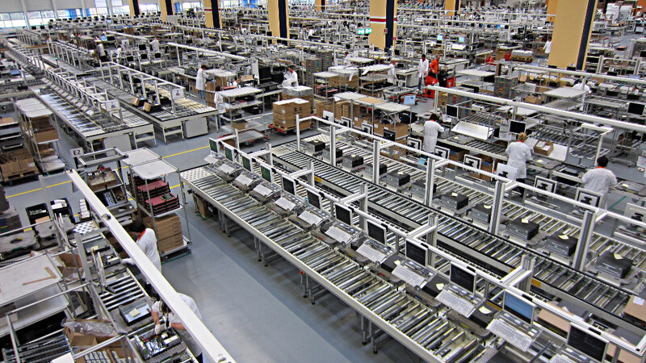

Sobre Nós
Fundada em 2022, a J.L TECH foi idealizada por dois amigos com uma paixão
pela informática e games,e possui a missão de trazer ao público produtos que possam inovar
o mercado atual de hardware e periféricos para computadores presentes no mercado.
Independente de seu tempo curto de existência, J.L TECH já construiu uma forte
comunidade de clientes satisfeitos na área de SP.Aqui, você pode visualizar os novos
lançamentos de hardware,como computadores,laptops, e periféricos para uso para
jogos, como teclados mecânicos,mouses, e muitos outros.
